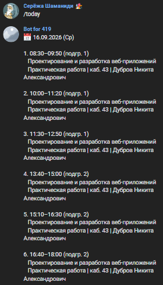

Что умеет бот
Слежение за расписанием
Бот обращается к API сайта колледжа, сравнивает новый снимок расписания с предыдущим и моментально реагирует на любые изменения.

Уведомления об изменениях
Замена преподавателя, смена кабинета, отмена пары или дистант — обо всём этом бот сообщает коротким и понятным текстом.
Массовые изменения
Если изменений слишком много, бот не засыпает чат десятком сообщений, а присылает полное расписание дня или всей недели.